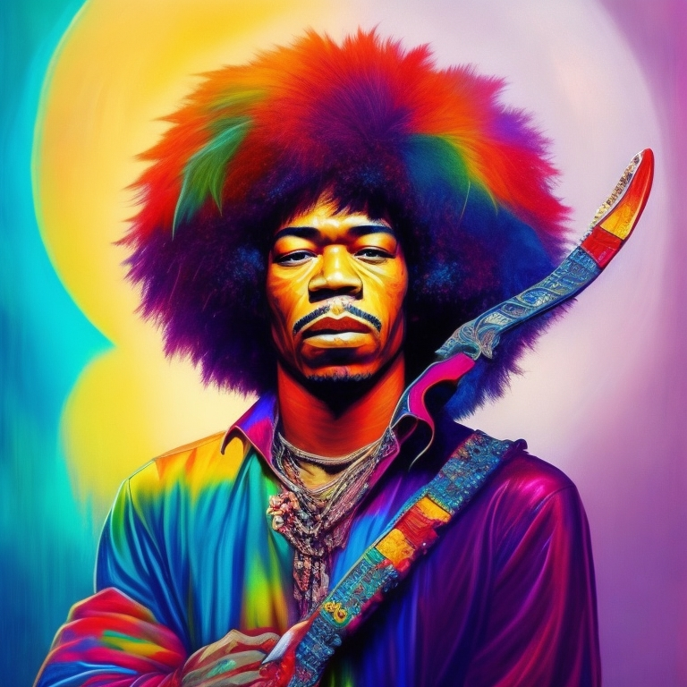

|
Jimmi Hendrix fue un influyente guitarrista, cantante y compositor estadounidense de rock. Nació el 27 de noviembre de 1942 en Seattle, Washington, y falleció el 18 de septiembre de 1970 a la edad de 27 años. Hendrix comenzó su carrera musical como guitarrista de respaldo para varios artistas, pero su talento excepcional pronto lo llevó a destacarse. Formó su propia banda, The Jimi Hendrix Experience, en 1966, junto con Noel Redding en el bajo y Mitch Mitchell en la batería. Juntos, crearon un sonido innovador y revolucionario que fusionaba el rock, el blues y la psicodelia. En 1967, Hendrix lanzó su álbum debut, "Are You Experienced", que fue aclamado por la crítica y se convirtió en un gran éxito comercial. Le siguieron otros álbumes icónicos como "Axis: Bold as Love" (1967) y "Electric Ladyland" (1968), consolidando su estatus como uno de los guitarristas más influyentes de la historia del rock. La actuación más destacada de Hendrix tuvo lugar en el Festival de Woodstock en 1969, donde su versión del himno nacional estadounidense con su guitarra eléctrica se convirtió en un momento emblemático de la contracultura de la época. A lo largo de su carrera, Hendrix experimentó con nuevas técnicas y efectos de guitarra, expandiendo los límites del instrumento y dejando una profunda huella en la música. Su estilo virtuoso, su creatividad y su energía en el escenario le valieron el reconocimiento como uno de los mejores guitarristas de todos los tiempos. Trágicamente, Jimi Hendrix murió prematuramente a los 27 años debido a una sobredosis accidental de barbitúricos en septiembre de 1970. A pesar de su corta carrera, su legado perdura y su influencia en la música y la cultura popular sigue siendo relevante hasta el día de hoy.
|
 |
| Realizado por Sergio Puchatt | |